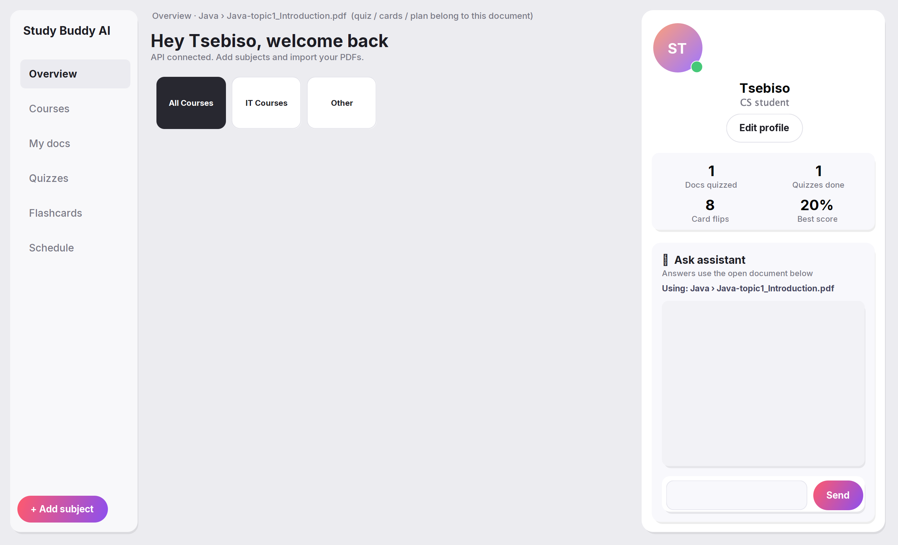
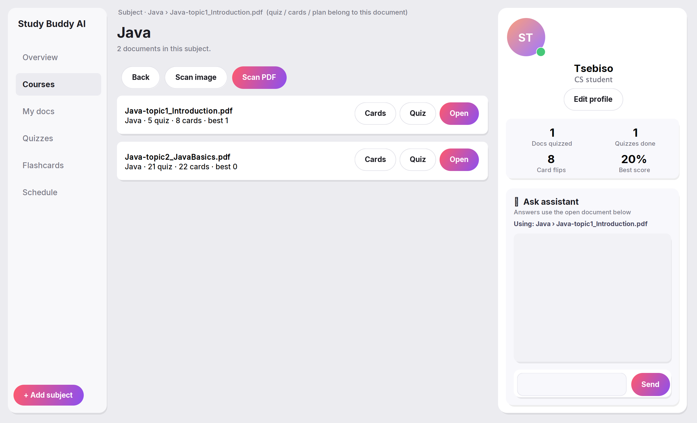
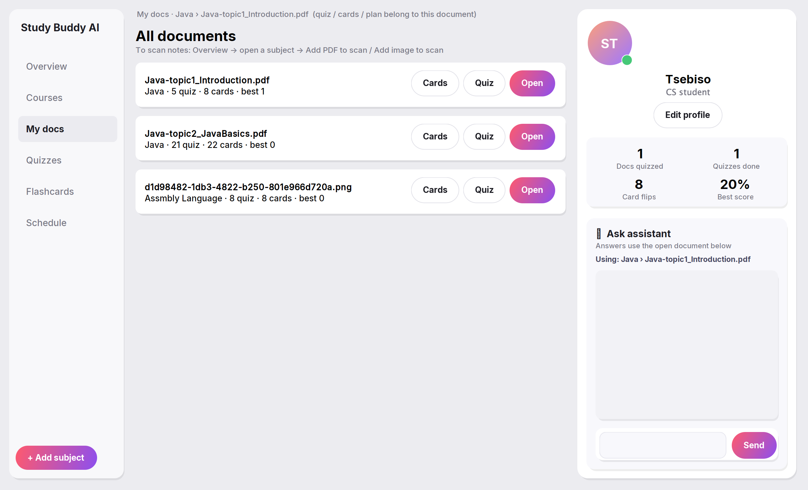
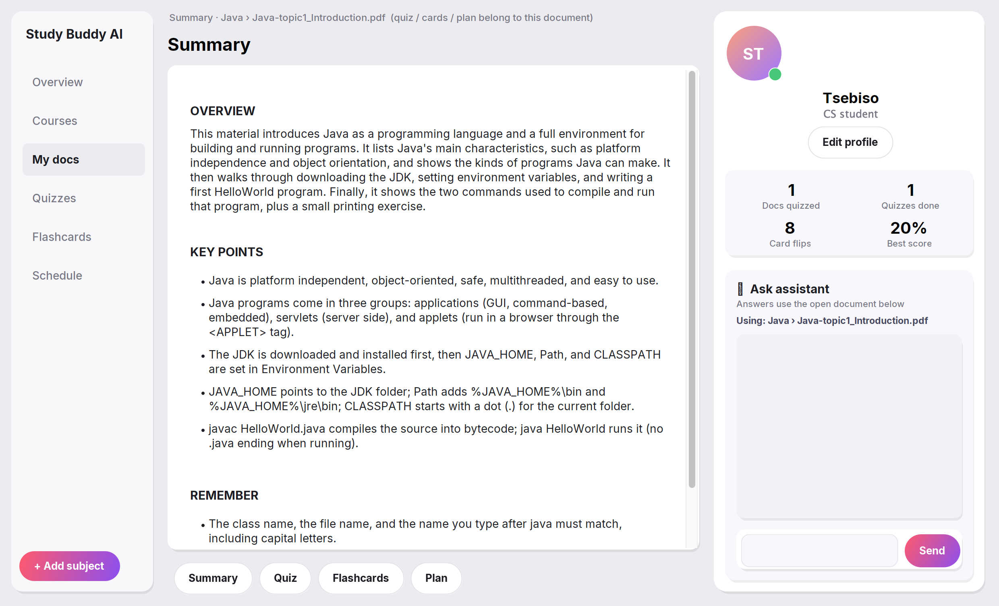
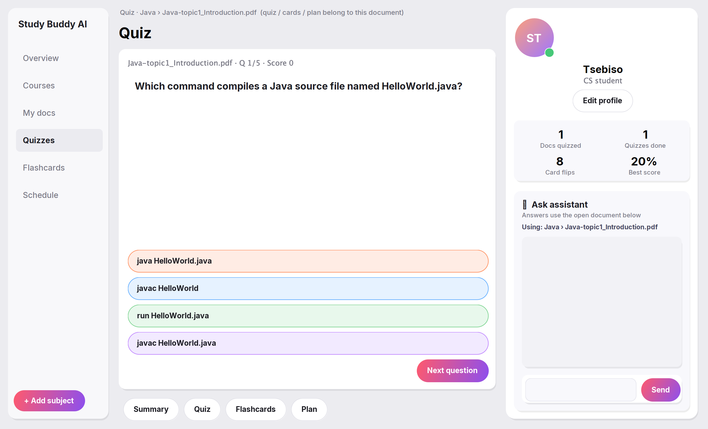
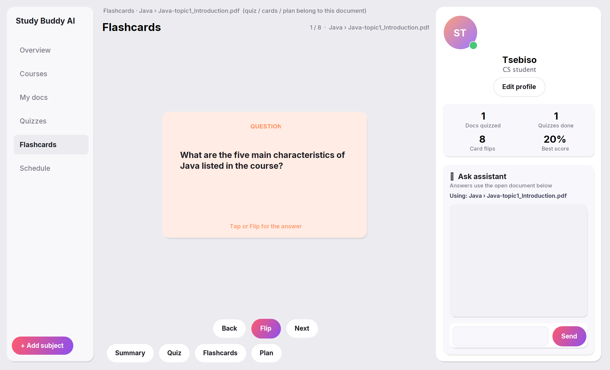
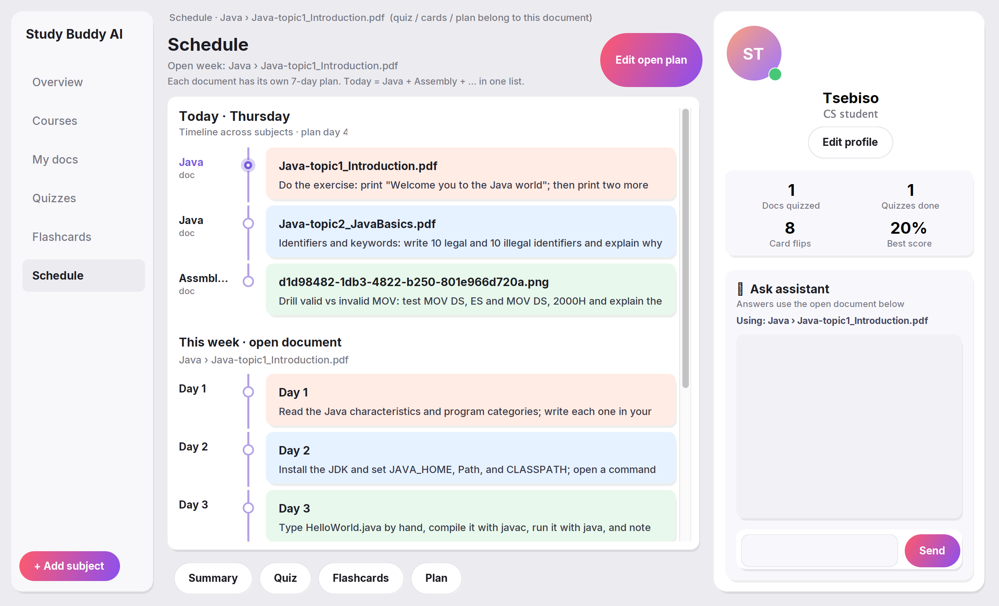
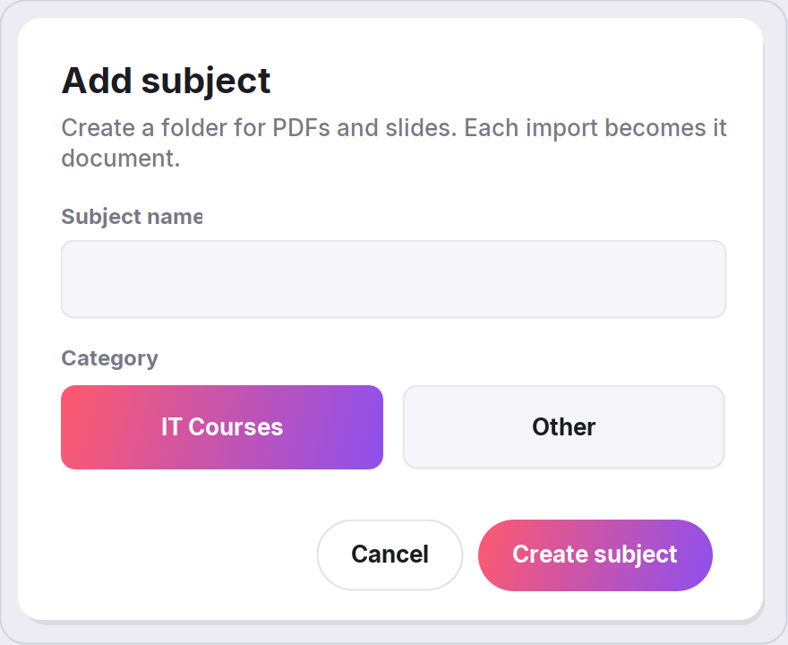

Contents
What is in this report
- 01What the program is
- 01bPlanning — idea and vision
- 01cPlanning — big picture flow
- 01dPlanning — window layout
- 01ePlanning — data outline
- 01fPlanning — user journey
- 01gPlanning — what I needed
- 01hPlanning — limits I accepted
- 01iPlanning — build order
- 02What I did + how to run
- 03Overview (with screenshot)
- 04Subjects and documents
- 05Summary
- 06Quiz
- 07Flashcards
- 08Schedule
- 09Add subject + Ask
- 10Classes and save/load
- 11FileImport and AI methods
- 12Problems, help, analysis
- 13Conclusion
- 14Important code (with short notes)
Each screenshot sits with the section it belongs to. Images use full page width and their real aspect ratio (not forced small).
Part 1
What the program is
Study Buddy AI is a desktop Java program I chose myself as my final project for this Java class.
Why I chose this
For the final project we could choose our own program. I chose Study Buddy myself. I wanted a study helper I would actually use: take my course notes (PDF or image), turn them into something I can revise with, and show it in a normal window — not only text in the terminal.
What the finished program does
- Add a subject (for example Java or Assembly Language)
- Import a PDF or image under that subject
- AI builds a study pack: summary, quiz (≥6), flashcards (≥6), 7-day plan
- Practise with Quiz and Flashcards
- Schedule shows today across subjects
- Ask answers questions about the open document
- Scores and subjects save under
data/
| Tool | What it is for |
|---|---|
| Java 17 + Swing | Window, buttons, panels, clicks |
| Apache PDFBox | Read PDF text |
| Token Plan API | Study packs + Ask (qwen3.8-flash) |
| Plain text files | Save without a database |
Part 1 — Planning
Idea and vision (before coding)
This part is the planning stage — what I drew out and decided before I wrote the real Swing code.
The problem I wanted to solve
I have lecture PDFs and slides for more than one subject. Opening them in a viewer only lets me read. I wanted one small desktop app where I can keep subjects separate, turn a file into practise material, and come back later without losing progress.
Vision in one sentence
A calm study dashboard: pick a subject → drop in notes → get summary / quiz / cards / plan → practise and ask questions → everything saved on my computer.
What success looked like in my head
- Looks like a real window app, not a console menu loop
- Works for Java and also other subjects (not Java-only)
- I can revise with quiz and flashcards from my own files
- If I close the app, my subjects and scores are still there next time
The pages after this show the outline diagrams I used to plan the flow, layout, data, and limits — before Part 2 (building and running).
Part 1 — Planning
Big picture flow
First sketch: how information should move through the app.
Figure (planning): file → read → AI pack → practise / schedule / Ask → save in data/.
I planned the middle “study pack” as the heart of the app. The window only displays that pack in different ways (summary page, quiz page, cards page, schedule page, Ask).
Part 1 — Planning
Window layout outline
I wanted three columns so navigation, study tools, and Ask do not fight for the same space.
Figure (planning): wireframe — sidebar | main pages | profile + Ask.
| Area | What I planned it for |
|---|---|
| Left | Move between Overview, subjects, docs, quiz, cards, schedule; add a subject |
| Centre | The page I am working on (cards, quiz, summary, …) |
| Right | My name/stats + Ask about the open document |
Part 1 — Planning
Data outline
How I planned to organise information (still just boxes — not code yet).
Figure (planning): one subject can have many documents; each document has one study pack.
This outline later became the classes Course, StudyDoc, and StudyPack. Planning it first helped me avoid mixing “subject” and “one PDF” into one messy object.
- Subject = folder for a course name (Java, Assembly, …)
- Document = one imported PDF or image
- Pack = summary + quiz + cards + plan for that document
Part 1 — Planning
User journey I planned
The path a student (me) should be able to follow on day one.
Figure (planning): step-by-step journey from add subject to saved progress.
Step 8 mattered a lot in planning: if closing the app wiped everything, the project would feel unfinished even if the quiz looked nice.
Part 1 — Planning
What I needed (building blocks)
Things I listed before coding so I knew what to learn or bring in.
| Need | Why (planning note) | What I expected to use |
|---|---|---|
| Desktop window + buttons | Dashboard, not console only | Java Swing |
| Read PDF text | Notes come as PDFs from class | A PDF library (PDFBox) |
| Optional image notes | Some slides are pictures | Send image to a vision-capable model |
| Turn notes into quiz/cards | Too slow to type by hand every time | Chat API (Token Plan / Qwen) |
| Keep data after close | Real study use | Simple files under a data folder |
| Classes from our course | Stay at beginner level where I can | Fields, constructors, methods, arrays, loops |
What I deliberately did not plan
- No login website / online account system
- No phone app
- No shared class database — only my local folder
Part 1 — Planning
Limits I accepted early
Planning also means writing down what the first version will not try to do.
| Limit | Why I accepted it |
|---|---|
| Needs internet + API key for import and Ask | I wanted real study content from my PDFs; hand-writing every quiz was not the goal |
| Very long PDFs may be cut | Keep requests smaller and the app responsive |
| AI reply must follow a fixed text format | So my beginner parser can find Q:/A:/W: lines with loops |
| One local profile on this computer | Enough for a class final project |
| UI polish second, structure first | Working flow mattered more than perfect looks on day one |
Writing these limits down helped me stop adding random features during coding. Later sections show what I actually built; this page is only the plan.
Part 1 — Planning
Build order I planned
Order of work I wrote before opening the editor for the big window.
- Data shapes — subject / document / pack (so I know what to save)
- Save & load — plain files, so progress can survive a restart
- Read PDF / image — get raw material into the program
- AI → pack — turn material into summary, quiz, cards, plan
- Window shell — three columns and page switching
- Tools — quiz, cards, schedule, Ask on top of a loaded pack
- Polish — file picker, progress while waiting, colours, bug fixes
Figure (planning): build order from data shapes to tools.
Part 2 onwards is what I actually implemented and how to run it. The planning pages stop here on purpose so they stay separate from the build story.
Part 2
What I did and how to run
I built it in steps: models → save/load → file import → AI → Swing UI → bug fixes.
- Model classes: Course, StudyDoc, StudyPack, QuizQuestion, FlashCard, PlanItem, UserProfile
- LibraryStore for the data folder
- FileImport for PDF text / image base64
- AiService for API + parsing
- StudyBuddyApp + UiKit for the dashboard
- Tested with real Java-topic PDFs and fixed picker, bubbles, quiz stats, API URL
cd "/Users/tsebisotuke/Documents/JAVA Class/StudyBuddy" javac -cp "lib/pdfbox-app.jar:." *.java java -cp "lib/pdfbox-app.jar:." StudyBuddyApp StudyBuddy: API ready (qwen3.8-flash) from .../config.properties
java|Java|IT Courses assmbly-language|Assmbly Language|IT Courses
name=Tsebiso role=CS student quizzesTaken=1 cardsFlipped=8 bestPercent=20 coursesCompleted=1
Part 3
Overview page
First screen after launch. Sidebar on the left, course cards in the centre, profile + Ask on the right.
What I did here
buildOverviewPage/refreshOverviewdraw the greeting and course cardscourseCardpaints a coloured card per subject (name, doc count)- Category chips filter All Courses / IT Courses / Other
- Profile panel shows quizzes done, card flips, best percent from
UserProfile
Screenshot below is the full window at natural size (2× capture so text stays clearer when printed).
Screenshot
Overview

Figure: Overview — greeting, Java + Assembly cards, profile stats, Ask panel.
Part 4
Subjects and documents
Each subject is a Course. Documents under it are StudyDocs with their own study pack.
What I did
showPage("course")+refreshCoursePagelist docs for the open subjectdocRowshows title, quiz/card counts, Open / Quiz / Cards- Scan PDF / Scan image call
importIntoSelected - My docs page lists everything across subjects via
refreshAllDocs
Screenshot
Java subject page

Figure: Java subject — 2 PDFs, Scan PDF / Scan image, Open / Quiz / Cards.
Screenshot
My docs

Figure: My docs — documents from the library in one list.
Part 5
Summary
After import, the summary tab shows the AI text for the open document.
loadDocIntoViewspushes the pack into the summary panelsummaryToHtmlturns OVERVIEW / KEY POINTS / REMEMBER into readable HTML
Screenshot
Summary

Figure: Summary tab for Java-topic1_Introduction.pdf.
Part 6
Quiz — what the methods do
Quiz uses the QuizQuestion array inside the open StudyPack.
| Method | What it does |
|---|---|
showQuestion() | Progress text, question, four shuffled options with colours |
checkAnswer(index) | Green on correct, red on wrong pick, update score text |
finishQuizIfNeeded() | Calls store.recordQuiz once on the last answer, then refresh profile |
nextQuestion() | Moves to the next index, or restarts after the end |
Stats update when the quiz is finished — not after every mid-quiz click.
Screenshot
Quiz

Figure: Quiz — coloured option pills, Q progress, Next question.
Part 7
Flashcards
Flashcards use the FlashCard array (front / back).
| Method / action | What it does |
|---|---|
showCard() | Shows front or back on the big card |
| Click card | Flips the face; can call recordCardFlip |
| Prev / Next | Change card index and call showCard again |
Screenshot
Flashcards

Figure: Flashcards page for the open document.
Part 8
Schedule
Schedule reads PlanItem lists from saved packs.
refreshPlanCalendar()builds Today (all subjects) + week for the open doctimelineRow/planDayRowdraw coloured day cardseditOwnPlan()lets me edit tasks without calling the AI again
Screenshot
Schedule

Figure: Schedule — Today across subjects + week for the open PDF.
Part 9
Add subject and Ask
New subjects and the chat panel on the right.
Add subject
addSubjectDialog()opens a ModalSheet with name + category pills- On Create,
store.addCoursewrites a new folder under data/courses/
Ask
- Grey bubble = me, purple = assistant
- Context label shows the open subject/document
AiService.askkeeps greetings short and does not force Java unless I ask
Screenshot
Add subject

Figure: Add subject sheet — name, IT Courses / Other, Create subject.
Part 10
Classes and LibraryStore
Small classes, one idea each.
| Class | Stores | Useful bit |
|---|---|---|
| Course | id, name, category, docs | docCount() |
| StudyDoc | title, source, pack, scores | questionCount / cardCount |
| StudyPack | summary, quiz[], cards[], plan[] | Built by AiService |
| QuizQuestion / FlashCard / PlanItem | One question, card, or day | Used by UI methods |
| UserProfile | name, role, totals | Right panel stats |
LibraryStore methods
| Method | What it does |
|---|---|
| addCourse / addDoc | Add then saveAll |
| recordQuiz / recordCardFlip | Update scores / flips and save |
| saveAll / saveDoc / loadAll | Write and read plain text under data/ |
Part 11
FileImport and AiService methods
| FileImport | Job |
|---|---|
| readPdfText | PDFBox text; cut ~12,000 chars |
| imageBase64 / imageMime | Prepare image for vision API |
| isPdf / isImage | Check file ending |
| AiService | Job |
|---|---|
| loadConfig | Read key, URL, model from config.properties |
| buildFromText / buildFromImage | Ask for a study pack then parsePack |
| studyPrompt | Exact ===SUMMARY=== / QUIZ / CARDS / PLAN format |
| parseQuiz / parseCards / parsePlan | Loops on Q:/A:/W: and F:/B: lines |
| ask | Chat reply with open-doc context |
Main window helpers: showPage, importIntoSelected (SwingWorker + WorkingSheet), pickStudyFile (native FileDialog).
Part 12
Problems, help, analysis
| Problem | Fix |
|---|---|
| Ask bubbles clipped | Cap bubble width |
| JFileChooser ugly | Native FileDialog |
| Import no feedback | WorkingSheet progress |
| Quiz PillButton cast crash | PillButton[] for options |
| Stats timing confusing | Record on last answer / finish |
| API 401 / 404 | Token Plan URL + qwen3.8-flash |
| Ask always Java | Short greeting prompt |
Help
- Course PowerPoints Java-topic1 … topic5
- Java Swing docs, PDFBox examples, Token Plan docs
- Algorithm Design report for print layout ideas
Analysis
Works for real PDFs, quiz/cards/schedule/Ask, and save/load. Limits: needs internet + key; long PDFs are cut; parser needs the AI tag format. Trade-off: API content is better than hard-coded samples, but not fully offline.
Part 13
Conclusion
I chose Study Buddy myself as my final project. It turns a PDF or image into a summary, quiz, flashcards, and a week plan in a Swing dashboard, and saves subjects under data/. I used classes, methods, arrays, and loops from the Java course, plus PDFBox and a chat API for the harder parts.
Real run: qwen3.8-flash, subjects Java and Assembly Language, profile 1 quiz / 8 card flips / best 20%.
Source
Important code — not the whole project
Below are only the parts that matter for how Study Buddy works. Each block has a short note first. The full project folder has the rest of the UI code.
1. Course — one subject
A subject has a name, category, and a list of documents. docCount() is used on the overview cards.
class Course { String id; String name; String category; ArrayList<StudyDoc> docs; public Course(String id, String name, String category) { this.id = id; this.name = name; this.category = category; this.docs = new ArrayList<StudyDoc>(); } public int docCount() { return docs.size(); } }
2. StudyPack — what the AI builds
After import, one pack holds the summary text plus the quiz, cards, and plan arrays the UI reads.
class StudyPack { String sourceName; String summary; QuizQuestion[] quiz; FlashCard[] cards; PlanItem[] plan; public StudyPack(String sourceName, String summary, QuizQuestion[] quiz, FlashCard[] cards, PlanItem[] plan) { this.sourceName = sourceName; this.summary = summary; this.quiz = quiz; this.cards = cards; this.plan = plan; } }
Source
Save scores + read a PDF
3. recordQuiz — update stats after a finished quiz
Adds one attempt, keeps the best score, updates the profile percent, then saves.
public void recordQuiz(StudyDoc doc, int score, int total) { doc.quizAttempts = doc.quizAttempts + 1; if (score > doc.bestQuizScore) { doc.bestQuizScore = score; } profile.quizzesTaken = profile.quizzesTaken + 1; int percent = 0; if (total > 0) { percent = (score * 100) / total; } if (percent > profile.bestPercent) { profile.bestPercent = percent; } refreshProfileTotals(); saveAll(); }
4. readPdfText — get text from a PDF
Uses PDFBox. Long files are cut so the API request stays smaller.
public static String readPdfText(File file) throws IOException { PDDocument doc = Loader.loadPDF(file); try { PDFTextStripper stripper = new PDFTextStripper(); String text = stripper.getText(doc); if (text == null) { text = ""; } text = text.trim(); if (text.length() > 12000) { text = text.substring(0, 12000) + "\n\n[Text cut here because the file was long.]"; } return text; } finally { doc.close(); } }
Source
Build pack + parse quiz lines
5. buildFromText — ask the AI for a study pack
Sends the course text with the study prompt, then turns the reply into a StudyPack.
public StudyPack buildFromText(String sourceName, String text) throws Exception { requireApi(); String prompt = studyPrompt() + "\n\nCOURSE TEXT:\n" + text; String reply = chatText(prompt); return parsePack(sourceName, reply); }
6. parseQuiz — turn Q:/A:/W: lines into objects
Loops through the AI reply. Each question needs a Q line, an A line, and wrong W lines.
private QuizQuestion[] parseQuiz(String block) { ArrayList<QuizQuestion> list = new ArrayList<QuizQuestion>(); String[] lines = block.split("\n"); String q = ""; String a = ""; ArrayList<String> wrongs = new ArrayList<String>(); for (int i = 0; i < lines.length; i++) { String line = lines[i].trim(); if (line.startsWith("Q:")) { if (q.length() > 0 && a.length() > 0) { list.add(new QuizQuestion(q, a, wrongs.toArray(new String[0]))); } q = line.substring(2).trim(); a = ""; wrongs = new ArrayList<String>(); } else if (line.startsWith("A:")) { a = line.substring(2).trim(); } else if (line.startsWith("W:")) { wrongs.add(line.substring(2).trim()); } } if (q.length() > 0 && a.length() > 0) { list.add(new QuizQuestion(q, a, wrongs.toArray(new String[0]))); } return list.toArray(new QuizQuestion[0]); }
Source
Quiz UI + page switch
7. checkAnswer — mark correct / wrong and maybe finish
Locks the buttons, paints green/red, adds to the score. On the last question it calls finishQuizIfNeeded so the profile updates.
private void checkAnswer(int index) { if (selectedDoc == null || answered || quizIndex >= selectedDoc.pack.quiz.length) { return; } answered = true; for (int i = 0; i < 4; i++) { answerButtons[i].setEnabled(false); } boolean ok = shuffledAnswers[index].equals(currentCorrect); // green = correct, red = wrong pick, grey = other options for (int i = 0; i < 4; i++) { if (shuffledAnswers[i].equals(currentCorrect)) { styleQuizOptionCorrect(answerButtons[i]); } else if (i == index) { styleQuizOptionWrong(answerButtons[i]); } else { styleQuizOptionMuted(answerButtons[i]); } } if (ok) { quizScore = quizScore + 1; quizFeedback.setText("Correct."); } else { quizFeedback.setText("Correct answer is highlighted in green."); } if (quizIndex >= selectedDoc.pack.quiz.length - 1) { finishQuizIfNeeded(); } }
8. showPage — switch the centre panel
Sidebar buttons call this. Quiz/cards/summary need a document open first.
private void showPage(String id) { if (id.equals("overview")) { refreshOverview(); pages.show(pageHost, "overview"); setNavActive("overview"); return; } if (id.equals("plan")) { refreshPlanCalendar(); pages.show(pageHost, "plan"); setNavActive("plan"); return; } if (id.equals("quiz") || id.equals("cards") || id.equals("summary")) { if (selectedDoc == null) { // tell the user to open a document first showPage("overview"); return; } loadDocIntoViews(); pages.show(pageHost, id); setNavActive(id.equals("summary") ? "docs" : id); return; } // course / docs / ... pages.show(pageHost, id); setNavActive(id); }
Full sources stay in the StudyBuddy folder for submission. This appendix only shows the functions that explain the main behaviour.